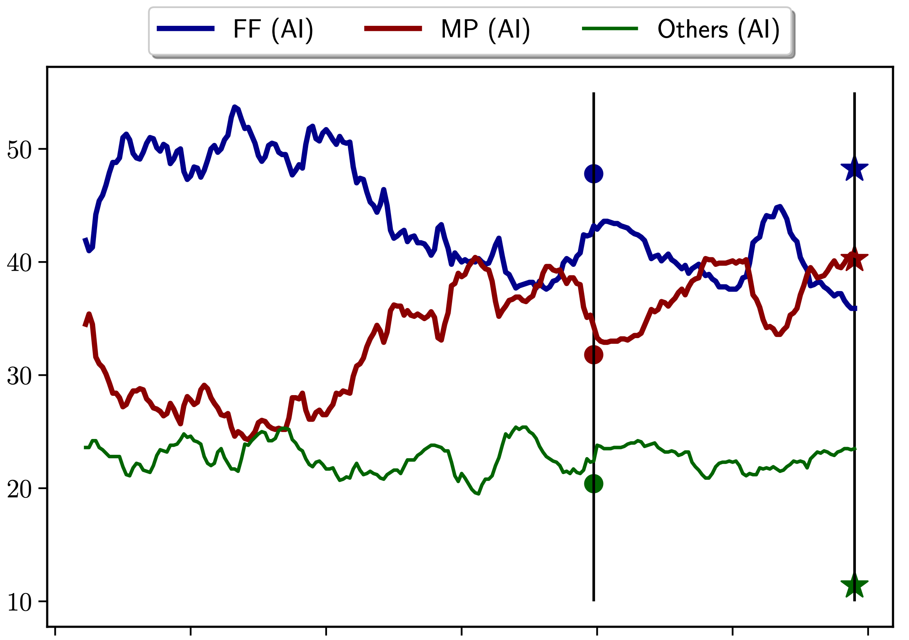
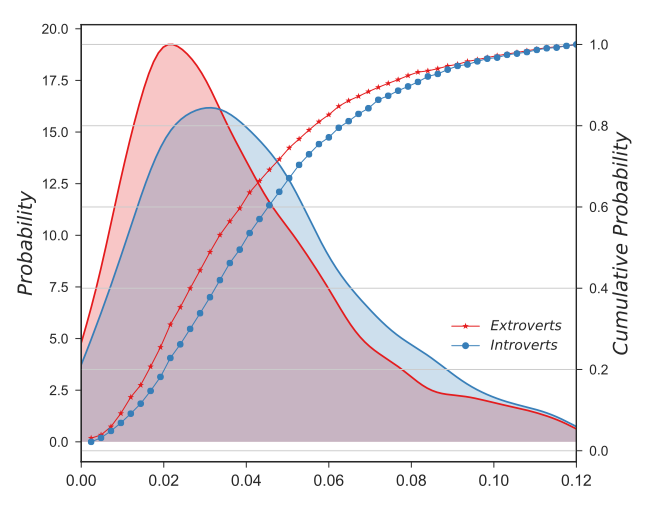
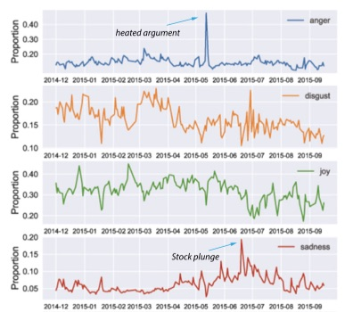
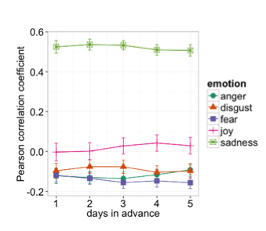
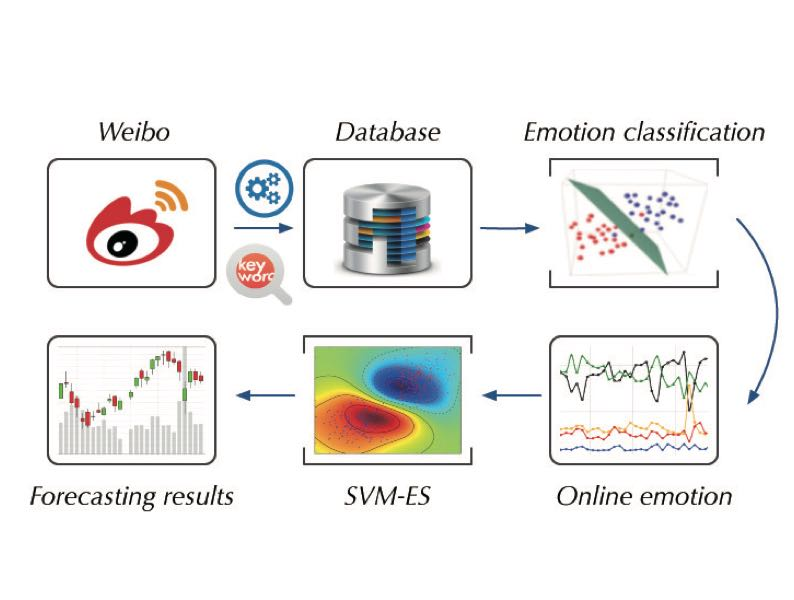

Zhenkun Zhou 👨🏻💻
周振坤，工学博士，首都经济贸易大学统计学院数据科学系讲师。
2020年于北京航空航天大学计算机学院获博士学位，师从许可教授。
2019年国家公派联合培养于纽约城市大学物理学院，师从Hernan Makse教授。
研究方向包括计算社会科学、社交网络大数据、观点挖掘。欢迎对本人研究方向感兴趣的同学报考研究生。
Zhenkun Zhou is an assistant professor in Capital University of Economics and Business. He received his Ph.D. degree of computer science from Beihang University in 2020 under supervision of Prof. Ke Xu. From 2018 to 2019, he visited the City University of New York in USA under supervision of Prof. Hernan A. Makse. His research focuses on computational social science, social networks, natural language processing and opinion modeling.
Selected Publications（代表作）

Why polls fail to predict elections
Journal of Big Data, Volume 8, Article number: 137 (2021)
Homophily of Music Listening in Online Social Networks of China
Social Networks, Volume 55, October 2018, Pages 160-169

Extroverts Tweet Differently from Introverts in Weibo
EPJ Data Science, 2018. 7:18

Tales of Emotion and Stock in China: Volatility, Causality and Prediction
World Wide Web, 2017.

Can Online Emotions Predict the Stock Market in China?
Web Information Systems Engineering (WISE), 2016.
*Best Paper award honorable mention
Working Paper（工作中）
Russian trolls on Twitter during the 2016 U.S. President Election
Losses Loom Larger than Gains in Social Media
This research investigates the association between stock market and corresponding online behaviors in
social media. It is revealed that people are not only sensitive to losses than to gains, but also attach
great importance to losses, which
demonstrate the robustness of the sensitive and attentional effect of losses.
Teaching（人才培养）
计算社会科学交叉研究组成员
2021级硕士：李洪瑶（人工智能方向），张悦（人工智能方向），孙天雨（大数据分析方向）
Lessons
本科课程：
Statistical Programming（统计编程基础）；
Big Data Preprocessing（大数据预处理）；
Unstructured Big Data Analyzing（非结构大数据分析）
研究生课程：
Unstructured Data Analyzing and Modeling（非结构数据分析与建模）；
Data Visualization（数据可视化）
Online Applications（在线项目）
Live Daily Prediction Using Artificial Intelligence
Through collecting a massively large number of tweets and building machine learning models, Zhenkun Zhou and
Hernan Makse investigate the dynamics of the Twitter social network formed by the interactions among
millions of Twitter supporters. We then infer the opinion of each user with Artificial Intelligence on the
candidates of the 2019 Argentina presidential election.
SONG IS U
This project is collecting kinds of real-time data in Netease Music platform, including the massive user
listening behaivor.
Through online analyzing the indivdual and collective listening records, we uncover ''WHO ARE U'' in
music.

Stock Prediction System with SVM-ES
The system applies the SVM based on online emotions to predict the price and volume of stock market in
China.
It provides the prediction results to Company of Warming Technology for paid service.
Services（学术服务）
Journal Reviewer
Royal Society Open Science; Big Data & Society; International Journal of Public Opinion Research; Scientific Reports; Cyberpsychology, Behavior, and Social Networking; PLoS One; IEEE Transactions on Big Data; Journal of Computational Social Science